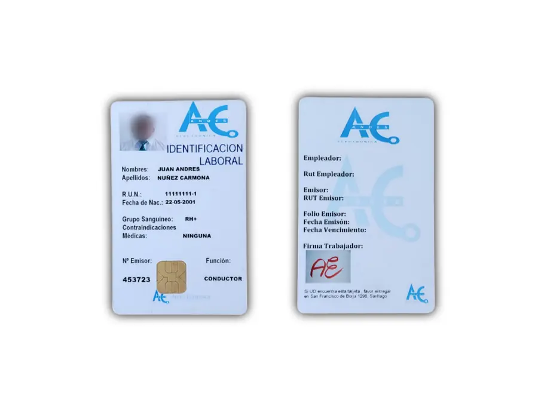

Identificación del trabajador
Tarjeta SmartCard
Tarjeta inteligente que guarda y registra los datos de la conducción: tiempos de trabajo y descanso del conductor y velocidad del vehículo. Ayuda a cumplir la normativa de transporte, facilita las inspecciones y previene la fatiga.
- Chip para identificar al trabajador y llevar la bitácora electrónica de sus marcaciones.
- Impresión personalizada con el logo de la empresa y la foto del trabajador.
Para SACEL: quién conduce y la bitácora de actividades de cada trabajador.